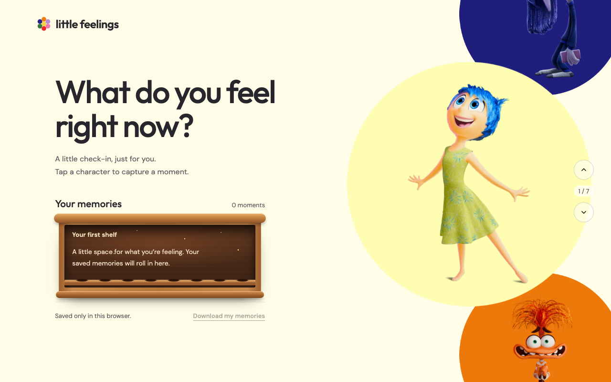

01
JavaScript Web App · Node backend
Little Feelings
A feelings journal inspired by Inside Out. Spin the character wheel to pick an emotion, write the story, attach photos, and keep each moment as a glowing memory orb on your shelf.
Guest mode. This preview runs the browser-only journal. Accounts, photo storage, and sync need the Node.js server, which GitHub Pages can't run.